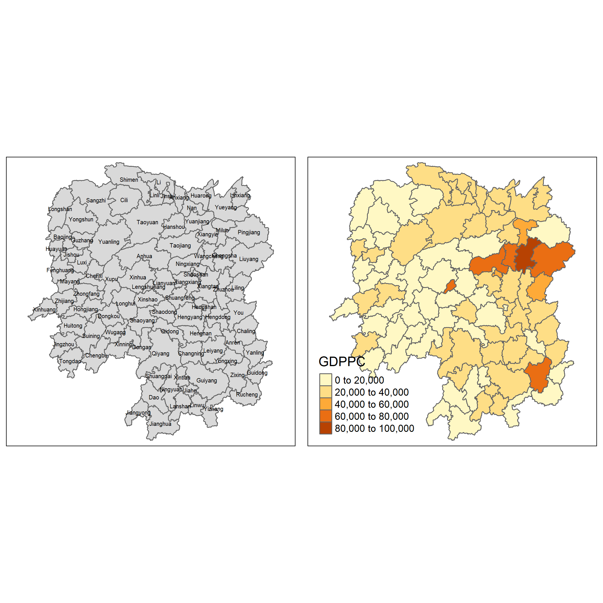
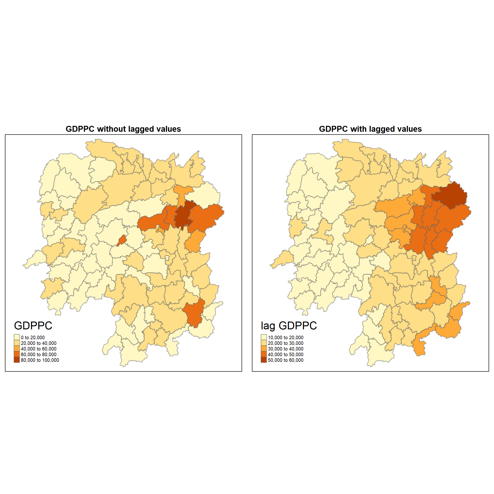
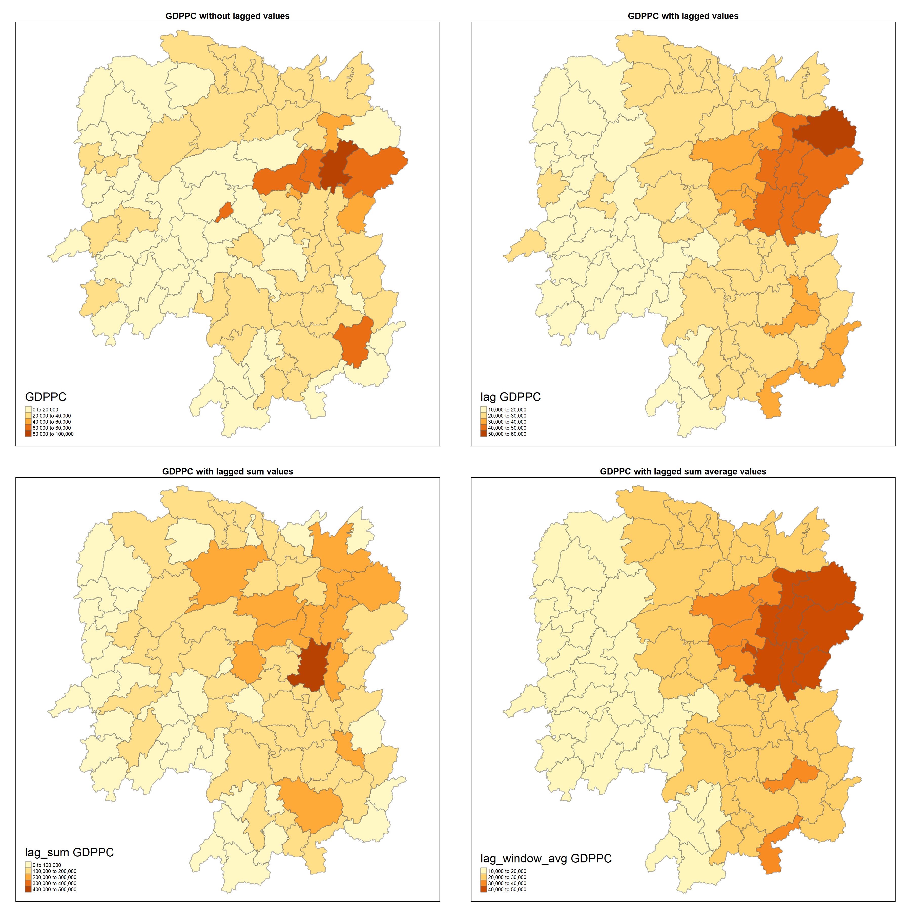

pacman::p_load(sf, spdep, tmap, tidyverse)Introduction to Spatial Weights and Application
Computation of spatial weights using R. Understanding the spatial relationships that exist among the features in the dataset.
geospatial
sf
spdep
tmap
Libraries
For this analysis, we will use the following packages from CRAN.
-
sf- Support for simple features, a standardized way to encode spatial vector data. Binds to ‘GDAL’ for reading and writing data, to ‘GEOS’ for geometrical operations, and to ‘PROJ’ for projection conversions and datum transformations. Uses by default the ‘s2’ package for spherical geometry operations on ellipsoidal (long/lat) coordinates. -
tidyverse- Loading the core tidyverse packages which will be used for data wrangling and visualisation. -
tmap- Thematic maps are geographical maps in which spatial data distributions are visualized. This package offers a flexible, layer-based, and easy to use approach to create thematic maps, such as choropleths and bubble maps. -
spdep- A collection of functions to create spatial weights matrix objects from polygon ‘contiguities’, from point patterns by distance and tessellations, for summarizing these objects, and for permitting their use in spatial data analysis, including regional aggregation by minimum spanning tree; a collection of tests for spatial ‘autocorrelation’
Data Preparation
Two dataset will be used for this study:
- Hunan.shp: A shapefile of the Hunan Province that consist of all the capital
- Hunan.csv: A csv file containing multiple attributes of each capital within Hunan
Importing of data
We will use the st_read to import the shape file and read_csv to import the aspatial data into the R environment. We will then use a relational join left_join to combine the spatial and aspatial data together.
hunan <- st_read(dsn = "data/geospatial",
layer = "Hunan")
hunan2012 <- read_csv("data/aspatial/Hunan_2012.csv")
hunan <- left_join(hunan,hunan2012)Visualisation of spatial data
For the visualisation, we will only be using tmap. We will prepare a basemap anbd a choropleth map to visualise the distribution of GDP per capita among the capital.
basemap <- tm_shape(hunan) +
tm_polygons() +
tm_text("NAME_3", size=0.4)
gdppc <- qtm(hunan, "GDPPC")
tmap_arrange(basemap, gdppc, asp=1, ncol=2)
Computing Contiguity Spatial Weights
Contiguity means that two spatial units share a common border of non-zero length. There are multiple criterion of contiguity such as:
- Rook: When only common sides of the polygons are considered to define the neighbor relation (common vertices are ignored).
- Queen: The difference between the rook and queen criterion to determine neighbors is that the latter also includes common vertices.
- Bishop: Is based on the existence of common vertices between two spatial units.

Except in the simplest of circumstances, visual examination or manual calculation cannot be used to create the spatial weights from the geometry of the data. It is necessary to utilize explicit spatial data structures to deal with the placement and layout of the polygons in order to determine whether two polygons are contiguous.
We will use the poly2nb function to construct neighbours list based on the regions with contiguous boundaries. Based on the documentation, user will be able to pass a queen argument that takes in True or False. The argument the default is set to TRUE, that is, if you don’t specify queen = FALSE this function will return a list of first order neighbours using the Queen criteria.
Computing (QUEEN) contiguity based neighbour
The code chunk below is used to compute Queen contiguity weight matrix.
wm_q <- poly2nb(hunan)
summary(wm_q)Neighbour list object:
Number of regions: 88
Number of nonzero links: 448
Percentage nonzero weights: 5.785124
Average number of links: 5.090909
Link number distribution:
1 2 3 4 5 6 7 8 9 11
2 2 12 16 24 14 11 4 2 1
2 least connected regions:
30 65 with 1 link
1 most connected region:
85 with 11 linksbased on the summary report above,the report shows that there are 88 area units in Hunan. The most connected area unit has 11 neighbours. There are two area units with only one neighbours.
For each polygon in our polygon object, wm_q lists all neighboring polygons. For example, to see the neighbors for the first polygon in the object, type:
wm_q[[1]][1] 2 3 4 57 85Polygon 1 has 5 neighbors. The numbers represent the polygon IDs as stored in hunan SpatialPolygonsDataFrame class.
To reveal the county names of the five neighboring polygons, the code chunk will be used:
hunan$NAME_3[c(2,3,4,57,85)][1] "Hanshou" "Jinshi" "Li" "Nan" "Taoyuan"We can retrieve the GDPPC of these five countries by using the code chunk below.
hunan$GDPPC[wm_q[[1]]][1] 20981 34592 24473 21311 22879The printed output above shows that the GDPPC of the five nearest neighbours based on Queen’s method are 20981, 34592, 24473, 21311 and 22879 respectively.
You can display the complete weight matrix by using str().
str(wm_q)List of 88
$ : int [1:5] 2 3 4 57 85
$ : int [1:5] 1 57 58 78 85
$ : int [1:4] 1 4 5 85
$ : int [1:4] 1 3 5 6
$ : int [1:4] 3 4 6 85
$ : int [1:5] 4 5 69 75 85
$ : int [1:4] 67 71 74 84
$ : int [1:7] 9 46 47 56 78 80 86
$ : int [1:6] 8 66 68 78 84 86
$ : int [1:8] 16 17 19 20 22 70 72 73
$ : int [1:3] 14 17 72
$ : int [1:5] 13 60 61 63 83
$ : int [1:4] 12 15 60 83
$ : int [1:3] 11 15 17
$ : int [1:4] 13 14 17 83
$ : int [1:5] 10 17 22 72 83
$ : int [1:7] 10 11 14 15 16 72 83
$ : int [1:5] 20 22 23 77 83
$ : int [1:6] 10 20 21 73 74 86
$ : int [1:7] 10 18 19 21 22 23 82
$ : int [1:5] 19 20 35 82 86
$ : int [1:5] 10 16 18 20 83
$ : int [1:7] 18 20 38 41 77 79 82
$ : int [1:5] 25 28 31 32 54
$ : int [1:5] 24 28 31 33 81
$ : int [1:4] 27 33 42 81
$ : int [1:3] 26 29 42
$ : int [1:5] 24 25 33 49 54
$ : int [1:3] 27 37 42
$ : int 33
$ : int [1:8] 24 25 32 36 39 40 56 81
$ : int [1:8] 24 31 50 54 55 56 75 85
$ : int [1:5] 25 26 28 30 81
$ : int [1:3] 36 45 80
$ : int [1:6] 21 41 47 80 82 86
$ : int [1:6] 31 34 40 45 56 80
$ : int [1:4] 29 42 43 44
$ : int [1:4] 23 44 77 79
$ : int [1:5] 31 40 42 43 81
$ : int [1:6] 31 36 39 43 45 79
$ : int [1:6] 23 35 45 79 80 82
$ : int [1:7] 26 27 29 37 39 43 81
$ : int [1:6] 37 39 40 42 44 79
$ : int [1:4] 37 38 43 79
$ : int [1:6] 34 36 40 41 79 80
$ : int [1:3] 8 47 86
$ : int [1:5] 8 35 46 80 86
$ : int [1:5] 50 51 52 53 55
$ : int [1:4] 28 51 52 54
$ : int [1:5] 32 48 52 54 55
$ : int [1:3] 48 49 52
$ : int [1:5] 48 49 50 51 54
$ : int [1:3] 48 55 75
$ : int [1:6] 24 28 32 49 50 52
$ : int [1:5] 32 48 50 53 75
$ : int [1:7] 8 31 32 36 78 80 85
$ : int [1:6] 1 2 58 64 76 85
$ : int [1:5] 2 57 68 76 78
$ : int [1:4] 60 61 87 88
$ : int [1:4] 12 13 59 61
$ : int [1:7] 12 59 60 62 63 77 87
$ : int [1:3] 61 77 87
$ : int [1:4] 12 61 77 83
$ : int [1:2] 57 76
$ : int 76
$ : int [1:5] 9 67 68 76 84
$ : int [1:4] 7 66 76 84
$ : int [1:5] 9 58 66 76 78
$ : int [1:3] 6 75 85
$ : int [1:3] 10 72 73
$ : int [1:3] 7 73 74
$ : int [1:5] 10 11 16 17 70
$ : int [1:5] 10 19 70 71 74
$ : int [1:6] 7 19 71 73 84 86
$ : int [1:6] 6 32 53 55 69 85
$ : int [1:7] 57 58 64 65 66 67 68
$ : int [1:7] 18 23 38 61 62 63 83
$ : int [1:7] 2 8 9 56 58 68 85
$ : int [1:7] 23 38 40 41 43 44 45
$ : int [1:8] 8 34 35 36 41 45 47 56
$ : int [1:6] 25 26 31 33 39 42
$ : int [1:5] 20 21 23 35 41
$ : int [1:9] 12 13 15 16 17 18 22 63 77
$ : int [1:6] 7 9 66 67 74 86
$ : int [1:11] 1 2 3 5 6 32 56 57 69 75 ...
$ : int [1:9] 8 9 19 21 35 46 47 74 84
$ : int [1:4] 59 61 62 88
$ : int [1:2] 59 87
- attr(*, "class")= chr "nb"
- attr(*, "region.id")= chr [1:88] "1" "2" "3" "4" ...
- attr(*, "call")= language poly2nb(pl = hunan)
- attr(*, "type")= chr "queen"
- attr(*, "sym")= logi TRUEComputing (ROOK) contiguity based neighbour
The code chunk below is used to compute Rook contiguity weight matrix.
wm_r <- poly2nb(hunan, queen=FALSE)
summary(wm_r)Neighbour list object:
Number of regions: 88
Number of nonzero links: 440
Percentage nonzero weights: 5.681818
Average number of links: 5
Link number distribution:
1 2 3 4 5 6 7 8 9 10
2 2 12 20 21 14 11 3 2 1
2 least connected regions:
30 65 with 1 link
1 most connected region:
85 with 10 linksThe summary report above shows that there are 88 area units in Hunan. The most connect area unit has 10 neighbours. There are two area units with only one heighbours.
Visualising the weights matrix
A connectivity graph takes a point and displays a line to each neighboring point. We are working with polygons at the moment, so we will need to get points in order to make our connectivity graphs. The most typically method for this will be polygon centroids. To retrieve the centroid of each area, we will use the st_centroid function.
coords <- st_centroid(st_geometry(hunan))Plotting Queen and Rook contiguity based neighbours map
Computing distance based neighbours
In this section, you will learn how to derive distance-based weight matrices by using dnearneigh() of spdep package. The function identifies neighbours of region points by Euclidean distance in the metric of the points between lower (greater than or equal to and upper (less than or equal to) bounds.
Determine the cut-off distance
Firstly, we need to determine the upper limit for distance band by using the steps below:
Return a matrix with the indices of points belonging to the set of the k nearest neighbours of each other by using knearneigh() of spdep.
Convert the knn object returned by knearneigh() into a neighbours list of class nb with a list of integer vectors containing neighbour region number ids by using knn2nb().
Return the length of neighbour relationship edges by using nbdists() of spdep. The function returns in the units of the coordinates if the coordinates are projected, in km otherwise.
Remove the list structure of the returned object by using unlist().
Min. 1st Qu. Median Mean 3rd Qu. Max.
24.80 32.53 38.06 38.91 44.66 58.25 The summary report shows that the largest first nearest neighbour distance is 58.25 km, so using this as the upper threshold gives certainty that all units will have at least one neighbour.
Computing fixed distance weight matrix
Now, we will compute the distance weight matrix by using dnearneigh() as shown in the code chunk below.
wm_d62 <- dnearneigh(coords, 0, 59)
wm_d62Neighbour list object:
Number of regions: 88
Number of nonzero links: 298
Percentage nonzero weights: 3.84814
Average number of links: 3.386364 The report shows that on average, every area should have at least 3 neighbours (links).
To display the structure of the weight matrix is to combine table() and card() of spdep.
table(hunan$County, card(wm_d62))
1 2 3 4 5 6
Anhua 1 0 0 0 0 0
Anren 0 0 0 1 0 0
Anxiang 0 0 0 0 1 0
Baojing 0 0 0 1 0 0
Chaling 0 0 1 0 0 0
Changning 0 0 1 0 0 0
Changsha 0 0 0 1 0 0
Chengbu 1 0 0 0 0 0
Chenxi 0 0 0 1 0 0
Cili 1 0 0 0 0 0
Dao 0 0 1 0 0 0
Dongan 0 0 1 0 0 0
Dongkou 0 0 0 1 0 0
Fenghuang 0 0 0 1 0 0
Guidong 0 0 1 0 0 0
Guiyang 0 0 1 0 0 0
Guzhang 0 0 0 0 0 1
Hanshou 0 0 0 1 0 0
Hengdong 0 0 1 0 0 0
Hengnan 0 0 0 0 1 0
Hengshan 0 0 0 0 0 1
Hengyang 0 0 0 0 1 0
Hongjiang 0 0 0 1 0 0
Huarong 0 0 1 0 0 0
Huayuan 0 0 0 1 0 0
Huitong 0 0 0 1 0 0
Jiahe 0 0 0 0 1 0
Jianghua 0 1 0 0 0 0
Jiangyong 0 1 0 0 0 0
Jingzhou 0 1 0 0 0 0
Jinshi 0 0 0 1 0 0
Jishou 0 0 0 0 0 1
Lanshan 0 0 0 1 0 0
Leiyang 0 0 0 1 0 0
Lengshuijiang 0 0 1 0 0 0
Li 0 0 1 0 0 0
Lianyuan 0 0 0 1 0 0
Liling 0 1 0 0 0 0
Linli 0 0 1 0 0 0
Linwu 0 0 0 1 0 0
Linxiang 1 0 0 0 0 0
Liuyang 0 1 0 0 0 0
Longhui 0 0 1 0 0 0
Longshan 1 0 0 0 0 0
Luxi 0 0 0 0 1 0
Mayang 0 0 0 0 0 1
Miluo 0 0 0 0 1 0
Nan 0 0 0 0 1 0
Ningxiang 0 0 0 1 0 0
Ningyuan 0 0 0 0 1 0
Pingjiang 0 1 0 0 0 0
Qidong 0 0 1 0 0 0
Qiyang 0 0 1 0 0 0
Rucheng 0 1 0 0 0 0
Sangzhi 1 0 0 0 0 0
Shaodong 0 0 0 0 1 0
Shaoshan 0 0 0 1 0 0
Shaoyang 0 0 0 1 0 0
Shimen 1 0 0 0 0 0
Shuangfeng 0 0 0 0 1 0
Shuangpai 0 0 0 1 0 0
Suining 0 0 0 1 0 0
Taojiang 0 1 0 0 0 0
Taoyuan 1 0 0 0 0 0
Tongdao 1 0 0 0 0 0
Wangcheng 0 0 0 1 0 0
Wugang 0 0 1 0 0 0
Xiangtan 0 0 0 1 0 0
Xiangxiang 0 0 0 0 1 0
Xiangyin 0 0 0 1 0 0
Xinhua 0 0 0 1 0 0
Xinhuang 1 0 0 0 0 0
Xinning 0 1 0 0 0 0
Xinshao 0 0 0 0 0 1
Xintian 0 0 0 0 1 0
Xupu 0 1 0 0 0 0
Yanling 0 0 1 0 0 0
Yizhang 1 0 0 0 0 0
Yongshun 0 0 0 1 0 0
Yongxing 0 0 1 0 0 0
You 0 0 1 0 0 0
Yuanjiang 0 0 0 0 1 0
Yuanling 1 0 0 0 0 0
Yueyang 0 1 0 0 0 0
Zhijiang 0 0 0 0 1 0
Zhongfang 0 0 0 1 0 0
Zhuzhou 0 0 1 0 0 0
Zixing 0 0 1 0 0 0Visualising distance weight matrix
The left graph with the red lines show the links of 1st nearest neighbours and the right graph with the black lines show the links of neighbours within the cut-off distance of 59km.
Adaptive distance weight matrix
Other than using distance as a criteria to decide the neighbours, it is possible to control the numbers of neighbours directly using k-nearest neighbours, either accepting asymmetric neighbours or imposing symmetry as shown in the code chunk below:
knn6 <- knn2nb(knearneigh(coords, k=6)) #k refers to the number of neighbours per area
knn6Neighbour list object:
Number of regions: 88
Number of nonzero links: 528
Percentage nonzero weights: 6.818182
Average number of links: 6
Non-symmetric neighbours listPlotting adaptive distance weight
We can plot the adaptive distance weight matrix using the code chunk below:
Weights based on Inversed Distance Weighting (IDW)
In this section, you will learn how to derive a spatial weight matrix based on Inversed Distance method.
First, we will compute the distances between areas by using nbdists() of spdep.
We will use the [lapply()] (https://www.rdocumentation.org/packages/base/versions/3.6.2/topics/lapply) to apply the inverse function through the list.
[[1]]
[1] 1.694446 3.805533 1.847048 2.867007 1.166097
[[2]]
[1] 1.694446 1.832614 1.889267 2.537233 1.681209
[[3]]
[1] 3.805533 3.007305 3.588446 1.468997
[[4]]
[1] 1.847048 3.007305 3.731278 1.490622
[[5]]
[1] 3.588446 3.731278 1.526472 1.775459Next, we will use the nb2listw to apply the weights list with values given by the coding scheme style chosen. There are multiple style to choose from:
- B (Basic Binary Coding)
- W (Row Standardised) - sums over all links to n
- C (Globally Standardised) - sums over all links to n
- U (Globally Standardised / No of neighbours) - sums over all links to unity
- S (Variance-Stabilizing Coding Scheme) - sums over all links to n
- minmax - divides the weights by the minimum of the maximum row sums and maximum column sums of the input weights
For the simplifed analysis, we will use the W (Row Standardised).
rswm_q <- nb2listw(wm_q, style="W", zero.policy = TRUE)
rswm_qCharacteristics of weights list object:
Neighbour list object:
Number of regions: 88
Number of nonzero links: 448
Percentage nonzero weights: 5.785124
Average number of links: 5.090909
Weights style: W
Weights constants summary:
n nn S0 S1 S2
W 88 7744 88 37.86334 365.9147From the earlier example, we know that the first Id has 5 neighbours. We take a look at the weight distribution of these 5 neighours. Since we are using Row Standardised, they should be equal.
rswm_q$weights[1][[1]]
[1] 0.2 0.2 0.2 0.2 0.2Each neighbor is assigned a 0.2 of the total weight. This means that when R computes the average neighboring income values, each neighbor’s income will be multiplied by 0.2 before being tallied.
Application of Spatial Weight Matrix
In this section, you will learn how to create four different spatial lagged variables, they are:
- spatial lag with row-standardized weights
- spatial lag as a sum of neighbouring values
- spatial window average
- spatial window sum
Spatial lag with row-standardized weights
Firstly, we’ll compute the average neighbor GDPPC value for each polygon using the lag.listw() that can compute the lag of a vector. These values are often referred to as spatially lagged values.
GDPPC.lag <- lag.listw(rswm_q, hunan$GDPPC)
head(GDPPC.lag)[1] 24847.20 22724.80 24143.25 27737.50 27270.25 21248.80In the previous section, we retrieved the GDPPC of the neighbours of the first area by using the following code chunk:
hunan$GDPPC[wm_q[[1]]][1] 20981 34592 24473 21311 22879From this, we can understand that the spatial lag with row-standardized weights is actually the average GDPPC of its neighbours.
\[(20981+34592+24473+21311+22879/5 = 24847.20)\]
We will now append these lagged values to our Hunan data frame.
lag.df <- as.data.frame(list(hunan$NAME_3,GDPPC.lag))
colnames(lag.df) <- c("NAME_3", "lag GDPPC")
hunan <- left_join(hunan,lag.df)Next, we will plot both the GDPPC and spatial lag GDPPC for comparison using the code chunk below.
gdppc <- tm_shape(hunan) +
tm_fill("GDPPC") +
tm_borders(alpha = 0.5) +
tm_layout(main.title = "GDPPC without lagged values", main.title.size = 0.7, legend.text.size = 0.4,
main.title.fontface = "bold",main.title.position = "center")
lag_gdppc <- tm_shape(hunan) +
tm_fill("lag GDPPC") +
tm_borders(alpha = 0.5) +
tm_layout(main.title = "GDPPC with lagged values", main.title.size = 0.7, legend.text.size = 0.4,
main.title.fontface = "bold",main.title.position = "center")
tmap_arrange(gdppc, lag_gdppc, asp=1, ncol=2)
Spatial lag as a sum of neighboring values
We can calculate spatial lag as a sum of neighboring values by assigning binary weights. This requires us to go back to our neighbors list, then apply a function that will assign binary weights, then we use glist = in the nb2listw function to explicitly assign these weights.
We start by applying a function that will assign a value of 1 per each neighbor. This is done with lapply, which we have been using to manipulate the neighbors structure throughout the past notebooks. Basically it applies a function across each value in the neighbors structure.
b_weights <- lapply(wm_q, function(x) 0*x + 1)
b_weights2 <- nb2listw(wm_q,
glist = b_weights,
style = "B")
b_weights2Characteristics of weights list object:
Neighbour list object:
Number of regions: 88
Number of nonzero links: 448
Percentage nonzero weights: 5.785124
Average number of links: 5.090909
Weights style: B
Weights constants summary:
n nn S0 S1 S2
B 88 7744 448 896 10224With the proper weights assigned, we can use lag.listw to compute a lag variable from our weight and GDPPC.
lag_df <- as.data.frame (list(hunan$NAME_3, lag.listw(b_weights2, hunan$GDPPC)))
colnames(lag_df) <- c("NAME_3", "lag_sum GDPPC")
hunan <- left_join(hunan, lag_df)
lag_df NAME_3 lag_sum GDPPC
1 Anxiang 124236
2 Hanshou 113624
3 Jinshi 96573
4 Li 110950
5 Linli 109081
6 Shimen 106244
7 Liuyang 174988
8 Ningxiang 235079
9 Wangcheng 273907
10 Anren 256221
11 Guidong 98013
12 Jiahe 104050
13 Linwu 102846
14 Rucheng 92017
15 Yizhang 133831
16 Yongxing 158446
17 Zixing 141883
18 Changning 119508
19 Hengdong 150757
20 Hengnan 153324
21 Hengshan 113593
22 Leiyang 129594
23 Qidong 142149
24 Chenxi 100119
25 Zhongfang 82884
26 Huitong 74668
27 Jingzhou 43184
28 Mayang 99244
29 Tongdao 46549
30 Xinhuang 20518
31 Xupu 140576
32 Yuanling 121601
33 Zhijiang 92069
34 Lengshuijiang 43258
35 Shuangfeng 144567
36 Xinhua 132119
37 Chengbu 51694
38 Dongan 59024
39 Dongkou 69349
40 Longhui 73780
41 Shaodong 94651
42 Suining 100680
43 Wugang 69398
44 Xinning 52798
45 Xinshao 140472
46 Shaoshan 118623
47 Xiangxiang 180933
48 Baojing 82798
49 Fenghuang 83090
50 Guzhang 97356
51 Huayuan 59482
52 Jishou 77334
53 Longshan 38777
54 Luxi 111463
55 Yongshun 74715
56 Anhua 174391
57 Nan 150558
58 Yuanjiang 122144
59 Jianghua 68012
60 Lanshan 84575
61 Ningyuan 143045
62 Shuangpai 51394
63 Xintian 98279
64 Huarong 47671
65 Linxiang 26360
66 Miluo 236917
67 Pingjiang 220631
68 Xiangyin 185290
69 Cili 64640
70 Chaling 70046
71 Liling 126971
72 Yanling 144693
73 You 129404
74 Zhuzhou 284074
75 Sangzhi 112268
76 Yueyang 203611
77 Qiyang 145238
78 Taojiang 251536
79 Shaoyang 108078
80 Lianyuan 238300
81 Hongjiang 108870
82 Hengyang 108085
83 Guiyang 262835
84 Changsha 248182
85 Taoyuan 244850
86 Xiangtan 404456
87 Dao 67608
88 Jiangyong 33860From the above data table and the GDPPC from the previous section, we know that the lagged sum is the addition of all the GDPPC of its neighbours.
\[(20981+34592+24473+21311+22879 = 124236)\]
gdppc <- tm_shape(hunan) +
tm_fill("GDPPC") +
tm_borders(alpha = 0.5) +
tm_layout(main.title = "GDPPC without lagged values", main.title.size = 0.7, legend.text.size = 0.4,
main.title.fontface = "bold",main.title.position = "center")
lag_gdppc <- tm_shape(hunan) +
tm_fill("lag GDPPC") +
tm_borders(alpha = 0.5) +
tm_layout(main.title = "GDPPC with lagged values", main.title.size = 0.7, legend.text.size = 0.4,
main.title.fontface = "bold",main.title.position = "center")
lag_sum_gdppc <- tm_shape(hunan) +
tm_fill("lag_sum GDPPC") +
tm_borders(alpha = 0.5) +
tm_layout(main.title = "GDPPC with lagged sum values", main.title.size = 0.7, legend.text.size = 0.4,
main.title.fontface = "bold",main.title.position = "center")
tmap_arrange(gdppc, lag_gdppc, lag_sum_gdppc, asp=1, ncol=3)
Spatial window average
The spatial window average uses row-standardized weights and includes the diagonal element. (region itself) We will use the include.self().
wm_q_self <- include.self(wm_q)We will now obtain the weight and retrieve the new spatial window average and combine it with our exisiting Hunan dataframe.
wm_q_self <- nb2listw(wm_q_self)
lag_w_avg_gpdpc <- lag.listw(wm_q_self,
hunan$GDPPC)
lag_w_avg_df <- as.data.frame(list(hunan$NAME_3, lag_w_avg_gpdpc))
colnames(lag_w_avg_df) <- c("NAME_3", "lag_window_avg GDPPC")
hunan <- left_join(hunan, lag_w_avg_df)gdppc <- tm_shape(hunan) +
tm_fill("GDPPC") +
tm_borders(alpha = 0.5) +
tm_layout(main.title = "GDPPC without lagged values", main.title.size = 0.7, legend.text.size = 0.4,
main.title.fontface = "bold",main.title.position = "center")
lag_gdppc <- tm_shape(hunan) +
tm_fill("lag GDPPC") +
tm_borders(alpha = 0.5) +
tm_layout(main.title = "GDPPC with lagged values", main.title.size = 0.7, legend.text.size = 0.4,
main.title.fontface = "bold",main.title.position = "center")
lag_sum_gdppc <- tm_shape(hunan) +
tm_fill("lag_sum GDPPC") +
tm_borders(alpha = 0.5) +
tm_layout(main.title = "GDPPC with lagged sum values", main.title.size = 0.7, legend.text.size = 0.4,
main.title.fontface = "bold",main.title.position = "center")
lag_sum_avg_gdppc <- tm_shape(hunan) +
tm_fill("lag_window_avg GDPPC") +
tm_borders(alpha = 0.5) +
tm_layout(main.title = "GDPPC with lagged sum average values", main.title.size = 0.7, legend.text.size = 0.4,
main.title.fontface = "bold",main.title.position = "center")
tmap_arrange(gdppc, lag_gdppc, lag_sum_gdppc, lag_sum_avg_gdppc, asp=1, ncol=2)